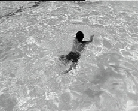

MENG YOU (DREAM WALKING)
Huang Wenhai | China 2004 | 86 Min.
Format: MiniDV
Material: MiniDV
Originalsprache: Mandarin
Drehbuch: Huang Wenhai
Kamera: Huang Wenhai
Schnitt: Huang Wenhai
Ton: Huang Wenhai
Produktion: Zhu Rikun
Verleih: Fanhall Studio
Großer Preis, Cinéma du Réel, Paris 2006
Deutsche Erstaufführung
Ein heißer Sommer in der Provinz Henan. Eine Kommune von „behaviour artists“ trinkt und diskutiert die Nächte durch, redet über Kunst, Poesie und Religion. Ihre kreative Ausdrucksweise bestimmt sich durch ihr Verhältnis zur chinesischen Gesellschaft und die improvisierende Lebensform. Sie betrachten sich wie die alten chinesischen Künstler als Wanderer auf einem „Transcendental Happiness Walk" durch die Menschheit. Von der Gesellschaft in Stich gelassen und ohne Orientierung in der kulturellen Krise Chinas suchen sie ihren ganz eigenen Weg der künstlerischen Existenz.
Zweiter Teil der "Trilogie der Massen" über das Überleben in einer absurden Welt.
Huang Wenhai, geb. 1971 in der Provinz Hunan. 1995 begann er ein Kameraaufbaustudium an der Filmakademie Peking und arbeitete als Journalist für den Fernsehsender CCTV. Seit 2001 ist er freier Regisseur und Filmproduzent. Sein 16mm-Spielfilm “Suburbs of Beijing” wurde bei der “New China Movie Show” in Los Angeles gezeigt und unter die zehn wichtigsten Filme des nichtkommerziellen Weltkinos gewählt.
Filme: Suburbs of Beijing 2002 | In the Military Training Camp 2002 | Floating Dust 2004 | Meng You (Dream walking) 2005
zurück
|